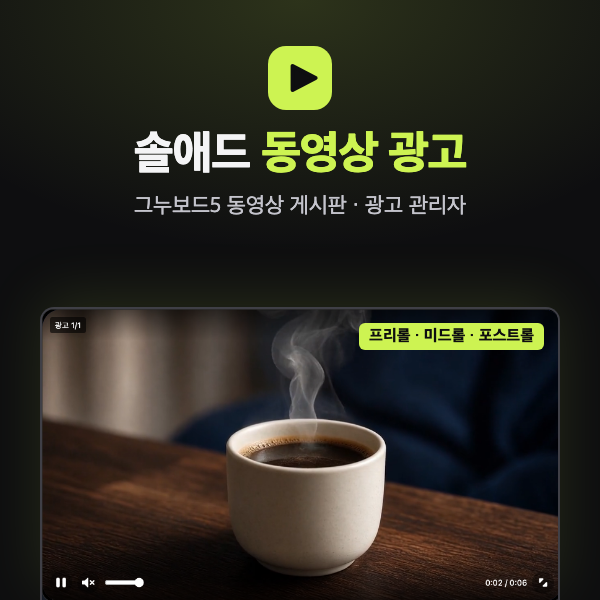
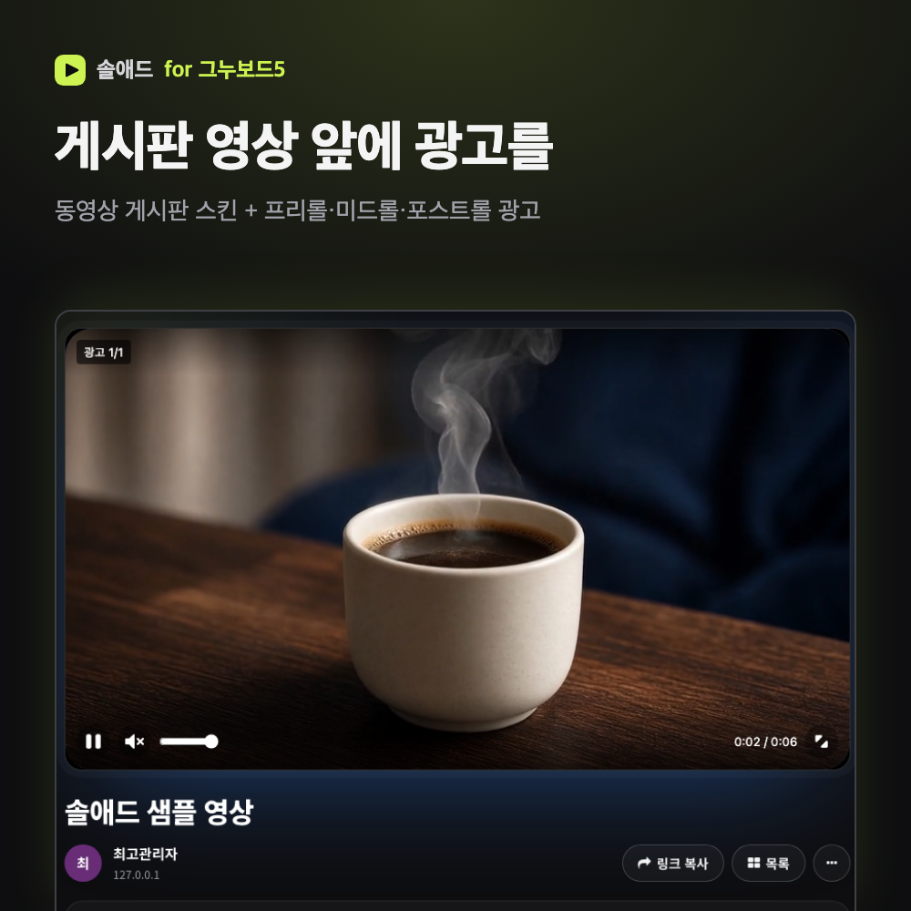
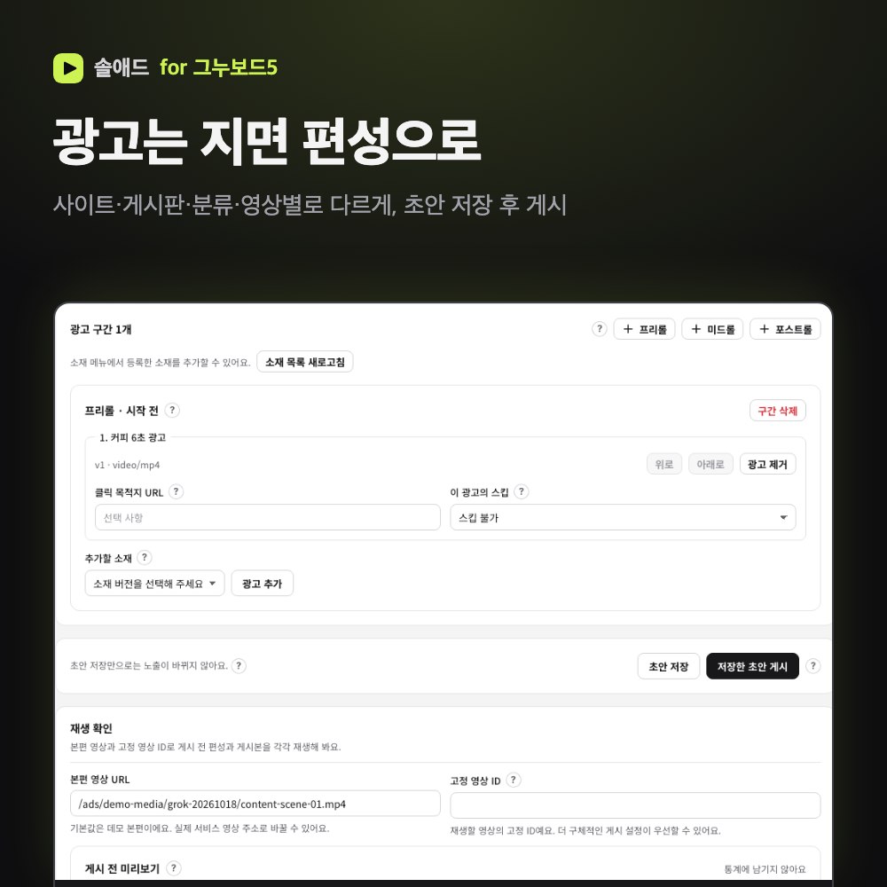
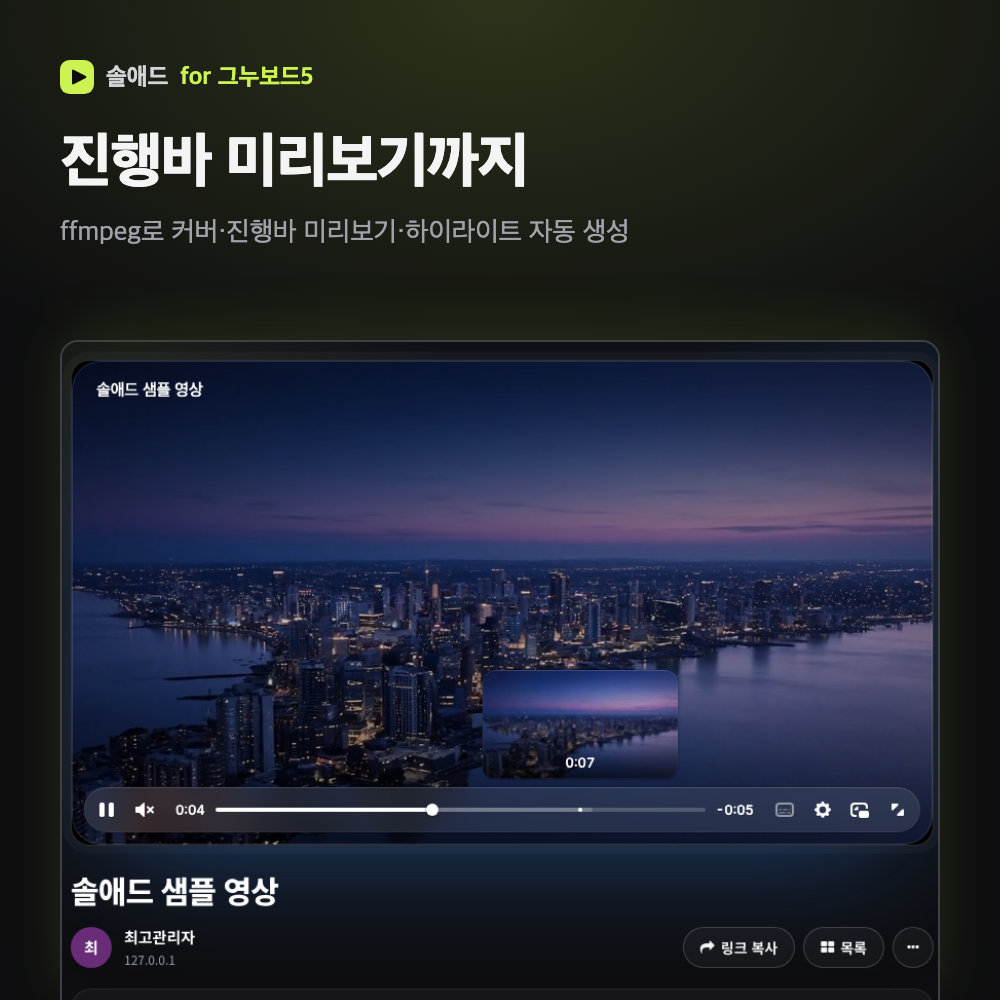
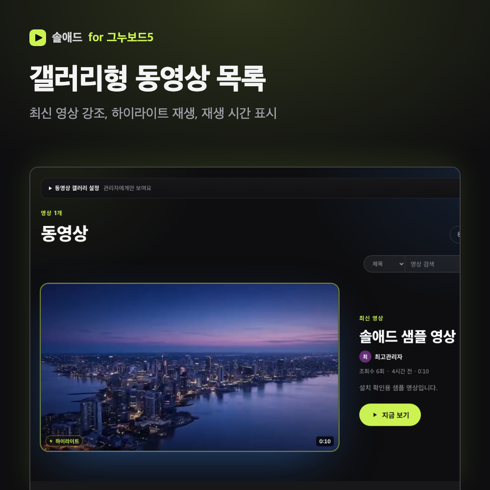
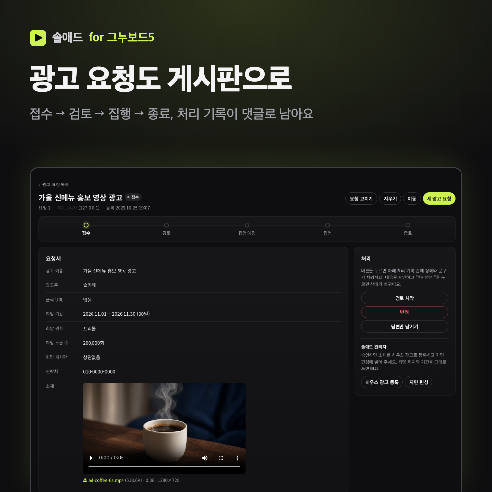
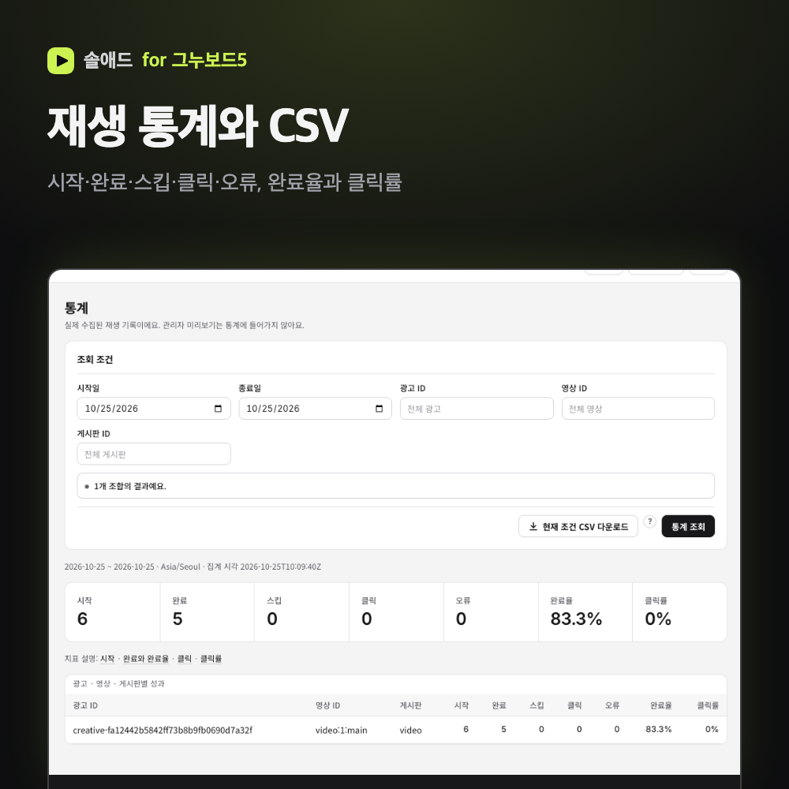
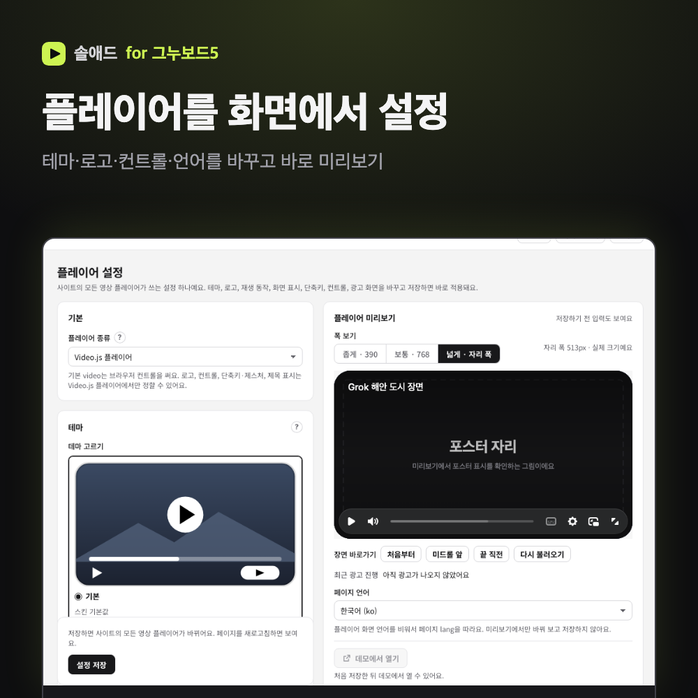
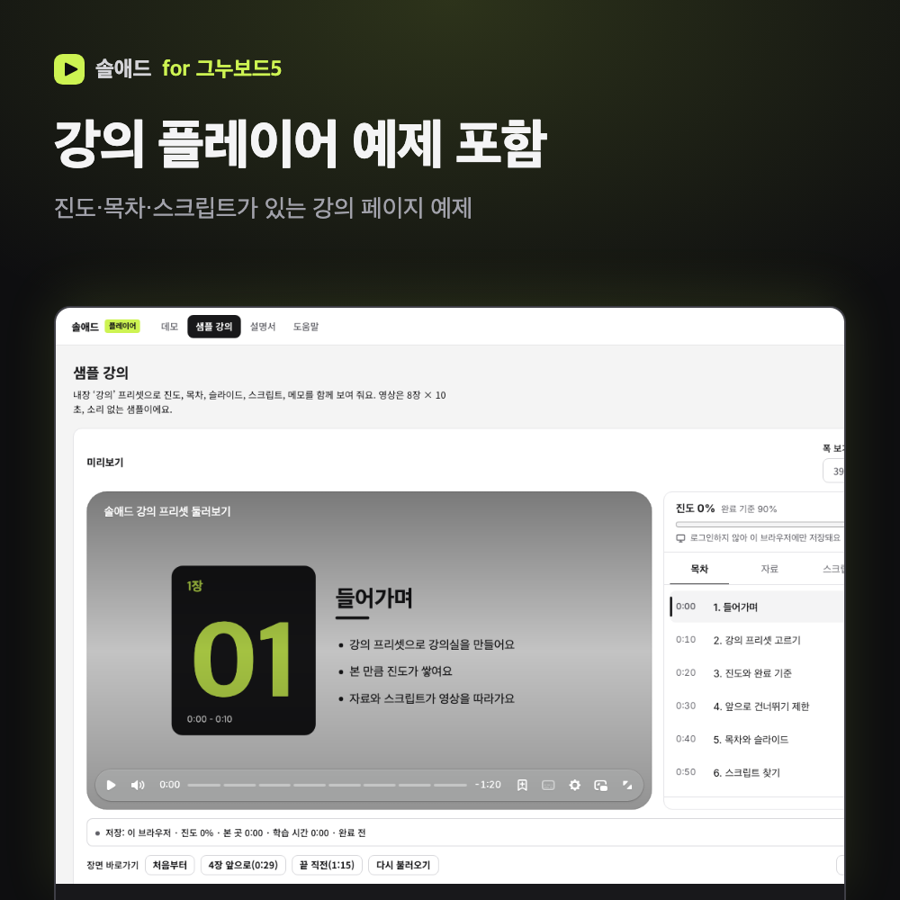
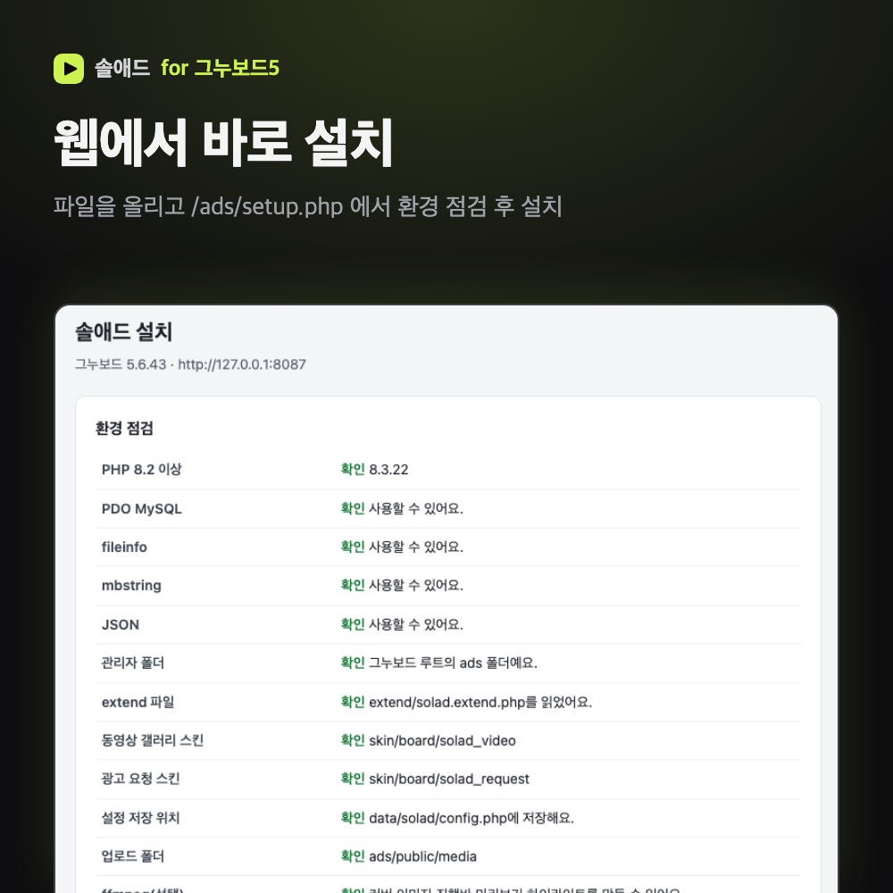

동영상 게시판 스킨, 광고 요청 게시판 스킨, 광고 관리자, 테마, 예제 페이지를 한 묶음으로 드립니다.
올린 영상 앞·중간·뒤에 내 광고를 넣고, 재생 결과를 통계로 확인하세요.
| 동영상 게시판 스킨 | solad_video · PC·모바일. 영상 파일, HLS 묶음(zip), HLS 주소, 영상 주소를 올릴 수 있어요. 밝은 테마(그누보드 기본 테마)는 solad_video_light, 솔애드 테마는 solad_video를 써요. |
|---|---|
| 광고 요청 게시판 스킨 | solad_request · 광고주가 기간·위치·소재를 적어 신청하고, 운영자가 상태를 바꾸며 처리해요. |
| 광고 관리자 | 그누보드 관리자 > 게시판관리 > 솔애드 광고 관리. 광고 요청, 하우스 광고, 지면 편성, 플레이어 설정, 업로드 동영상, 통계. |
| 테마(선택) | 동영상 사이트용 어두운 테마. 쓰지 않아도 스킨과 광고 관리자는 그대로 동작해요. |
| 예제 페이지 | 광고 플레이어 데모와 강의 플레이어(진도·목차·스크립트) 예제. |
| 설치 가이드·도움말 | 화면 캡처가 들어간 HTML 문서 2종과 웹 설치 화면(/ads/setup.php). |
1. 게시판 영상에 프리롤·미드롤·포스트롤 광고
영상 시작 전, 중간, 끝난 뒤에 광고를 넣어요. 광고마다 클릭 주소와 스킵 여부(스킵 불가, N초 후 스킵)를 정하고, 여러 광고 중 하나만 무작위로 보여 줄 수도 있어요.

2. 사이트·게시판·분류·영상별 지면 편성
사이트 기본 편성 하나로 시작하고, 필요한 게시판이나 분류, 특정 영상만 따로 편성할 수 있어요. 가장 가까운 편성이 적용되고, 특정 게시판만 광고를 끌 수도 있어요. 초안으로 저장해 미리 본 뒤 게시하므로 작업 중인 내용이 바로 노출되지 않아요.

3. 커버 이미지·진행바 미리보기·하이라이트
서버에 ffmpeg가 있으면 올린 영상에서 커버 이미지, 진행바에 마우스를 올렸을 때 보이는 미리보기, 목록용 하이라이트 영상을 만들어요. ffmpeg가 없어도 재생과 광고는 동작해요.

4. 갤러리형 동영상 목록
최신 영상을 크게 보여 주고, 재생 시간과 하이라이트를 함께 표시해요. 반응형이라 모바일에서도 같은 스킨으로 보여요.

5. 광고 요청 게시판
광고주가 원하는 기간, 위치, 노출 수, 소재 파일을 적어 신청해요. 글은 항상 비밀글로 저장되고, 운영자는 접수 → 검토 → 집행 예정 → 집행 → 종료(또는 보완 요청·반려)로 상태를 바꾸며 처리 기록을 남겨요. 광고 관리자에서 모든 요청을 모아 볼 수 있어요.

6. 재생 통계와 CSV 내려받기
광고별·영상별·게시판별로 시작, 완료, 스킵, 클릭, 오류 수와 완료율, 클릭률을 보여 줘요. 조회한 조건 그대로 CSV로 내려받을 수 있어요. 관리자 미리보기 재생은 통계에 들어가지 않아요.

7. 플레이어 설정
Video.js 기반 플레이어의 테마, 로고, 컨트롤, 재생 동작, 화면 표시, 언어를 관리자 화면에서 바꾸고 바로 미리볼 수 있어요.

8. 예제 페이지
광고 플레이어 데모와 진도·목차·스크립트가 있는 강의 플레이어 예제를 함께 드려요. 내 페이지에 플레이어를 붙일 때 참고하세요.

9. 웹에서 설치
파일을 올리고 최고관리자로 /ads/setup.php 를 열면 PHP 버전, 확장, 폴더 권한, ffmpeg를 점검한 뒤 버튼 하나로 설치해요. 그누보드 기본 표는 바꾸지 않고 g5_solad_ 로 시작하는 표만 만들어요.

| 그누보드 | 5.6 이상 (5.6.43에서 확인) |
|---|---|
| PHP | 8.2 이상, PDO MySQL·fileinfo·mbstring·JSON 확장 |
| DB | MySQL 5.7 이상 또는 MariaDB 10.3 이상 |
| 웹 서버 | 그누보드가 동작하는 Apache 또는 nginx. 따로 설정할 것은 없어요(nginx 보안 설정 예시 포함). |
| 선택 | ffmpeg·ffprobe(커버·진행바 미리보기·하이라이트), ZipArchive(HLS 묶음 업로드) |
자세한 내용은 zip의 docs/install.html(설치 가이드)과 docs/help.html(사용 도움말)에 화면과 함께 정리되어 있어요.